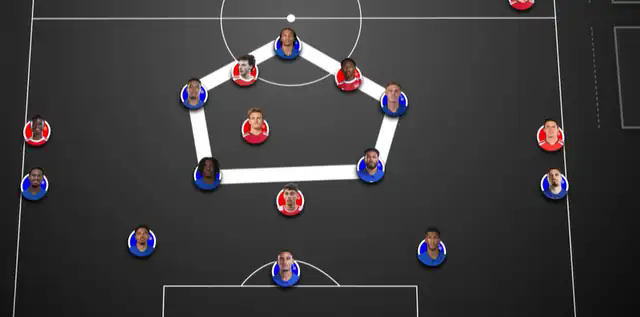
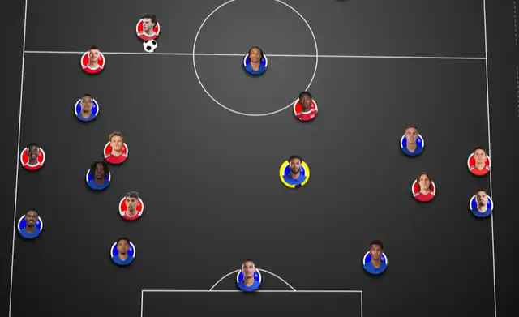
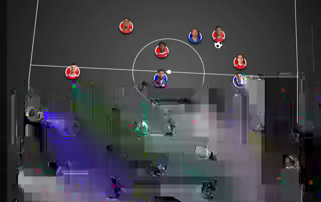
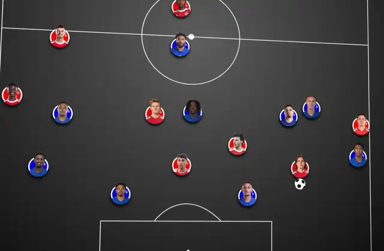

Tactical Dive · Arsenal 2–1 Chelsea
06.09.2026 · PREMIER LEAGUE.
OUT WIDE,
BACK INSIDE.
Chelsea cố thắng quân số ở giữa. Arsenal trả lời bằng cách kéo trận đấu ra ngoài — cho đến khi chính trung lộ của Chelsea tự mở ra.

01 · CHELSEA’S CENTRAL OVERLOAD
Palmer và Rogers
không thực sự đứng ở cánh.
Điểm xuất phát của trận đấu nằm ở trung lộ. Chelsea kéo Cole Palmer và Morgan Rogers vào trong thay vì để họ bám biên, ghép hai người với João Pedro, Reece James và Roméo Lavia để tạo một cụm năm người quanh khu vực giữa sân.
Ý đồ rất rõ: Arsenal không chỉ phải theo dõi một số 9 và hai số 10, mà còn phải xử lý hai pivot phía sau. Nếu hàng tiền vệ Arsenal dâng lên quá mạnh, Chelsea có thể tìm người ở sau lưng. Nếu họ giữ vị trí, James hoặc Lavia có thời gian nhận bóng và xoay hướng.
Vì vậy, vấn đề của Arsenal không đơn giản là “đưa thêm người vào giữa”. Làm vậy chỉ khiến trận đấu diễn ra đúng nơi Chelsea muốn. Câu trả lời của Arsenal là thay đổi nơi cuộc đấu diễn ra.

ARSENAL MOVE THE PROBLEM ELSEWHERE.
02 · FIVE ON THE RIGHT
Cánh phải của Saka
trở thành một overload năm người.
Arsenal dồn quân số sang phải. Bukayo Saka giữ chiều rộng, Ben White xuất hiện ở phía dưới hoặc overlap, Martin Ødegaard dịch sang tạo góc chuyền, Declan Rice hỗ trợ phía sau và Kai Havertz cũng trôi sang cùng hành lang.
Đây không còn là một tổ hợp winger–full-back thông thường. Chelsea phải đối phó với năm cầu thủ Arsenal trong một vùng sân hẹp. Nếu họ giữ nguyên double pivot ở giữa, Arsenal sẽ có người thừa ngoài biên. Nếu họ kéo thêm người sang, cấu trúc trung tâm bắt đầu biến dạng.
Điểm quan trọng nhất của overload này không phải Arsenal nhất thiết phải kết thúc pha bóng ở cánh phải. Mục tiêu là buộc Chelsea phải dịch chuyển nhiều hơn mức họ muốn.
FIVE MEN. ONE CORRIDOR.
03 · LAVIA SHIFTS, JAMES STAYS
Giải quyết cánh phải.
Mở trung lộ.
Chelsea buộc phải phản ứng. Lavia dịch sang phía overload để hỗ trợ hàng thủ và giảm lợi thế quân số của Arsenal. Nhưng mỗi bước chân sang ngang của Lavia đồng nghĩa với việc James phải quán xuyến một vùng trung lộ lớn hơn.
Đây là trade-off Arsenal tìm kiếm. Chelsea có thể cứu khu vực quanh Saka, nhưng họ không thể làm điều đó mà không trả giá ở nơi khác. Khi Lavia bị hút ra biên, James trở thành pivot duy nhất trong một không gian quá rộng.
Ødegaard và Rice vì vậy không chỉ tham gia overload. Họ còn chờ thời điểm để quay lại phía trong. Arsenal ra ngoài để kéo người theo, rồi tái nhập vào đúng khoảng trống vừa xuất hiện.

04 · LEWIS-SKELLY DROPS
Build-up không thắng bằng số người.
Nó thắng bằng việc kéo người đi.
Khi Chelsea đẩy khối pressing lên, Myles Lewis-Skelly lùi xuống để tham gia first phase. Anh trở thành một điểm nhận thấp bên cạnh tuyến đầu Arsenal và buộc một trong hai pivot Chelsea phải quyết định có bước theo hay không.
Nếu pivot giữ vị trí, Lewis-Skelly có thời gian nhận bóng và đưa Arsenal vượt qua lớp pressing đầu tiên. Nếu pivot bước lên, khoảng trống phía sau anh mở ra cho Rice hoặc Ødegaard. Cấu trúc build-up vì thế không nhằm giữ bóng lâu hơn; nó nhằm kéo một mắt xích Chelsea ra khỏi vị trí.
Đây cũng là lý do các vị trí của Arsenal trông không cố định. Người cầm bóng không nhất thiết là người khai thác khoảng trống. Nhiệm vụ của anh có thể chỉ là làm đối thủ di chuyển trước.

05 · CALAFIORI PULLS NETO INSIDE
Tzolis giữ biên.
Calafiori phá reference.
Bên trái, Riccardo Calafiori là quân cờ làm cấu trúc Chelsea khó giữ nhất. Anh không đứng cố định như một hậu vệ trái truyền thống mà liên tục bước vào trong, dâng cao hoặc xuất hiện ở half-space.
Pedro Neto phải đi theo những chuyển động đó. Khi Neto bó vào, Acheampong bị bỏ lại ngoài biên để đối đầu trực tiếp với Tzolis. Tzolis không cần rời biên: chỉ việc giữ chiều rộng đã đủ ghim Acheampong và kéo hàng thủ Chelsea giãn ra.
Khoảng cách giữa Acheampong và Lacroix vì thế lớn dần. Đó là khe Calafiori có thể tấn công sau khi đã kéo Neto vào trong. Một chuyển động của Calafiori đồng thời tạo hai vấn đề: người theo anh rời vị trí, còn người ở lại phải bảo vệ một khoảng sân rộng hơn.

CALAFIORI ATTACKS THE GAP.
Cả năm tình huống thực chất là cùng một câu chuyện. Chelsea muốn tập trung quân số ở giữa sân; Arsenal không cố thắng trực tiếp tại đó.
Ra ngoài.
Kéo người.
Quay vào giữa.
Overload cánh phải kéo Lavia khỏi trung tâm. Lewis-Skelly lùi xuống kéo pivot bước lên. Calafiori di chuyển vào trong kéo Neto rời biên. Tzolis và Saka giữ chiều rộng để hàng thủ Chelsea không thể co lại mà không để lộ khoảng trống ở nơi khác.
Arsenal không ra biên vì trung lộ bị khóa. Họ ra biên để chính Chelsea mở trung lộ cho họ.